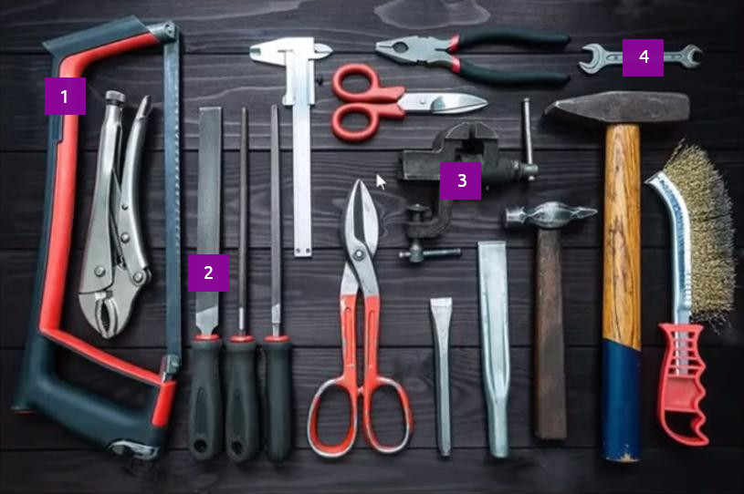

Grammar Перетаскивайте варианты, чтобы расставить в правильном порядке, в соответствии с рисунком. (пр. ответ: 1 - Saw, 2 - Hand file, 3 - Vice, 4 - Spanner)

1Hand file
2Saw
3Vice
4Spanner
Listening MC A seafarer is comparing vessels. What is the main difference concerning his new vessel?
His new ship follows a regular shipping route.
His new ship travels between the Arabian Gulf and China.
His new ship has a lot of variety - every job is different. (пр. ответ)
Reading Выберите правильные слова, чтобы составить предложение. Пр. ответы: Saab, Eagle.
Special precautions
should be taken. Also please note
Grammar Расположите слова в правильном порядке - Why was the Master so angry with the crew?
Why
so
the
the
was
angry
Master
with
crew?
Перетащите нужное слово в предложение. 1 - so, 2 - the.
Why
so
the
What's ___.
This is ___.
Выберите термины, подходящие под каждую из категорий. В каждой категории должно быть 2 термина. Methods: link, frayed; Damaged ropes: chafed, shackle; Config: coiled, figure of eight.
Check results
* В некоторых вопросах теста может быть несколько правильных ответов.